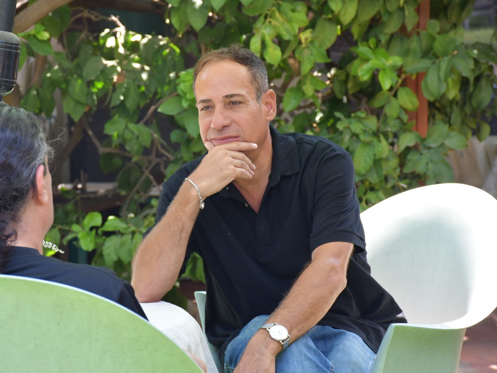

יש החלטות שנגררות שבועות, ויש כאלה שאנחנו מקבלים ומיד מתחרטים. אימון לקבלת החלטות עוזר להבין מה באמת עוצר אתכם, ולבנות דרך בחירה שאפשר לסמוך עליה.
יש החלטה אחת שמלווה אתכם כבר תקופה. היא עולה בראש בדרך לעבודה, לפני השינה, בכל פעם שמישהו שואל "אז מה נסגר". אתם שוקלים, מתלבטים, דוחים, וחוזרים לנקודה שבה התחלתם.
לדחות החלטה מרגיש בטוח יותר מלבחור לא נכון, אבל יש לזה מחיר. ההתלבטות שלא נגמרת גוזלת אנרגיה, לא נותנת מנוחה, ולאט לאט שוחקת את הביטחון שאפשר בכלל לסמוך על עצמנו. ובינתיים, כשאנחנו לא בוחרים, בדרך כלל הנסיבות או מישהו אחר בוחרים במקומנו.
רוב האנשים שמגיעים לתהליך הזה הם לא אנשים שלא יודעים לחשוב. הם אנשים חכמים ומתפקדים, שדווקא בגלל זה רואים את כל הצדדים, את כל הסיכונים ואת כל האפשרויות, ובדיוק שם נתקעים.
אימון לקבלת החלטות לא נותן לכם את התשובה הנכונה מבחוץ. הוא עוזר לכם להגיע אליה בעצמכם, מתוך בהירות לגבי מה שחשוב לכם ומה שבאמת עוצר אתכם, ועם ביטחון לעמוד מאחורי הבחירה.
הנהנתם לפחות פעם אחת? זה כבר סימן טוב, כי זיהוי הדפוס הוא הצעד הראשון. שיחת היכרות לא מחייבת בכלום.
אם קבלת החלטות הייתה רק עניין של היגיון, היינו פותחים טבלת יתרונות וחסרונות ומסיימים. אבל כולנו יודעים שזה לא עובד ככה. ההחלטה נתקעת כי מתחת לפני השטח פועלים כוחות אחרים לגמרי.
אלה הדברים שבדרך כלל עוצרים את ההחלטה:
יש גם הבדל חשוב בין החלטה קשה להחלטה מורכבת. החלטה מורכבת היא כזו עם הרבה נתונים, שצריך לסדר ולשקול, והיא נפתרת עם שיטה. החלטה קשה היא כזו שהנתונים בה ברורים, אבל משהו רגשי לא נותן לבחור. רוב האנשים שמגיעים לתהליך לא תקועים בגלל חוסר במידע, אלא בגלל מה שהמידע מעורר בהם. לכן בתהליך לא מסתפקים בשאלה "מה עדיף", אלא שואלים קודם מה גורם לכם להישאר בלי החלטה.
בפסיכולוגיה קוראים לזה מוקד שליטה, וזו אחת השאלות החשובות ביותר בכל הנוגע לקבלת החלטות. היא בודקת עד כמה אתם מרגישים שהחיים שלכם תלויים בכם, לעומת תלויים בנסיבות, במזל ובאנשים אחרים.
אדם עם מוקד שליטה חיצוני מרגיש שהדברים פשוט קורים לו. ההחלטות הגדולות נגזרות מהמצב, מהציפיות של אחרים או ממה שהתגלגל, ולכן גם קשה לו לבחור, כי בעומק הוא לא באמת מאמין שלבחירה שלו יש משקל. אדם עם מוקד שליטה פנימי יודע שיש קשר בין איך שהוא פועל לבין החיים שהוא חי. הוא לא שולט בכל מה שקורה, אבל הוא כן אחראי על התגובה ועל הכיוון.
חלק מרכזי מהתהליך הוא להעביר את מוקד השליטה פנימה. לא כדי להעמיס עליכם אשמה על כל מה שקרה, אלא כדי להחזיר לכם את התחושה שהגה החיים נמצא בידיים שלכם, ושמותר לכם לבחור.
אין נוסחה אחת שמתאימה לכל החלטה, אבל יש דרך עבודה מסודרת. אלה הכלים המרכזיים שנכנסים לתהליך, מותאמים למה שאתם מביאים.
לפני שבוחנים אפשרויות, בודקים מה באמת חשוב לכם. כשברור מהם הערכים שמובילים אתכם, הרבה החלטות שנראו מסובכות מתבהרות, כי יש מצפן לבדוק מולו כל חלופה.
ראייה צרה שרואה רק שתי דרכים היא מלכודת נפוצה. נפרוש את כל האפשרויות על השולחן, גם כאלה שנראות לא ריאליות, ונבחן כל אחת מול היתרונות, המחירים וההתאמה לכם.
החלטה טובה לא נולדת רק מטבלת נתונים, וגם לא רק מתחושת בטן. נלמד להפריד בין השניים, להקשיב לכל אחד בנפרד, ואז לחבר אותם לבחירה שלמה שאפשר לסמוך עליה.
הרבה פעמים מה שתקוע זו לא ההחלטה אלא הפחד מהטעות. נזהה את הפחד, נבדוק מה באמת יקרה בתרחיש הגרוע, ונהפוך אותו ממכשול שמשתק לגשר שאפשר לעבור עליו.
האינטואיציה היא כלי חזק, אבל היא מדויקת הכי הרבה כשרגועים ומחוברים. נלמד להבחין בין קול פנימי אמיתי לבין פחד או לחץ שמתחזים לו, ולסמוך על עצמכם בלי לבטל את ההיגיון.
לפעמים התשובה יושבת במקום שקשה להגיע אליו במילים. קלפי השראה ודמיון מודרך, כלים מרכזיים בעבודה, עוקפים את הרעש של הראש ומאפשרים לראות את הבחירה מזווית חדשה.
לפעמים הדרך הפשוטה להבין מה מחפשים היא לראות את הפער בין המשפט שאיתו מגיעים לתהליך, לבין המשפט שאיתו רוצים לצאת ממנו.
"אני מתלבט שבועות ולא מחליט"
אני מגיע להחלטה בזמן סביר, ונשאר איתה
"אני מפחד כל כך לבחור לא נכון"
אני בוחר, ויודע להתמודד גם אם לא יצא מושלם
"אני שואל את כולם ומתבלבל עוד יותר"
אני מקשיב לאחרים, אבל ההחלטה נשארת שלי
"אחרי שהחלטתי אני מתחרט ובודק שוב"
אני עומד מאחורי הבחירה שלי בלי לבדוק אותה כל הזמן
"ריבוי האפשרויות פשוט משתק אותי"
אני יודע לסנן ולבחור את מה שמתאים לי
"אני זורם עם מה שמחליטים במקומי"
אני לוקח את ההגה ובוחר את הכיוון
השינוי לא קורה ביום אחד. הוא קורה כשמתחילים לזהות את מה שעוצר בזמן אמת, ומתרגלים דרך אחרת לבחור, שוב ושוב, עד שהיא הופכת לטבעית.
זו מחשבה מאוד נפוצה, ומאוד הגיונית. אתם כבר התייעצתם, קראתם, עשיתם רשימות. אז למה זה עדיין תקוע?
כי כשאנחנו בתוך ההתלבטות, כמעט אי אפשר לראות אותה מבחוץ. כשהשאלה מלחיצה ואנחנו לבד איתה, אנחנו נוטים לעגל פינות, להימנע מהתשובה הכואבת, ולחזור לאותה שיחה פנימית בגרסאות שונות. זה לא חוסר יכולת, זו פשוט זווית הראייה.
וגם שימו לב לדבר מעניין: כשצריך החלטה מקצועית גדולה בעבודה, אנחנו נועצים במומחה בלי להתלבט. אבל כשההחלטה נוגעת לחיים שלנו עצמנו, אנחנו מצפים מעצמנו להסתדר לבד, ולרוב פונים לחברים ולא למי שזה המקצוע שלו.
אימון אישי לא מחליט במקומכם. הוא מייצר מקום לעצור בו, לשאול את השאלות הנכונות, ולהפוך את ההתלבטות האינסופית לבחירה שאתם עומדים מאחוריה.
מול בחירת מסלול לימודים, קריירה, מערכת יחסים או מקום מגורים
להישאר או לעזוב, לעבור לעצמאות, להרחיב עסק או לקחת סיכון חדש
פרידה, מעבר, ילדים שגדלו, ופתאום צריך לבחור מחדש כיוון
כל מי שמתיש את עצמו בהתלבטות, ורוצה ללמוד לבחור ברוגע
זה תלוי בהחלטה ובמה שמסתתר מאחוריה. יש התלבטויות שנפתרות בכמה מפגשים ממוקדים, כי ברגע שמבינים מה באמת עוצר, הבחירה מתבהרת כמעט מעצמה. קושי חוזר שמלווה כמעט כל החלטה דורש עבודה ארוכה מעט יותר. בשיחת ההיכרות מגדירים יחד למה לצפות, בלי התחייבות.
כן. קושי מתמשך בקבלת החלטות הוא כמעט תמיד דפוס נלמד, לא תכונה קבועה. מאחוריו יושבים בדרך כלל פחד מטעות, צורך בשליטה מלאה או קול פנימי שדורש ודאות שלא קיימת. את הדפוס הזה אפשר לזהות ולפרק, ובמקומו לבנות דרך החלטה ברורה שאפשר לסמוך עליה.
חברים אוהבים אתכם, ולכן לרוב יגידו את מה שהכי קל לשמוע, או את מה שהם היו בוחרים לעצמם. בתהליך מקצועי לא מקבלים במקומכם את ההחלטה ולא מרפים כשאתם מעגלים פינות. השאלות נועדו לחשוף את מה שבאמת חשוב לכם, כולל החלקים שלא תמיד נעים להודות בהם, וזה בדיוק מה שפותח את ההחלטה.
קודם מבררים למה דווקא ההחלטה הזאת תקועה: מה הפחד, איזו אמונה פועלת מתחת לפני השטח, והאם אתם בוחרים מתוך רצון או מתוך ריצוי. רק אחר כך ניגשים להחלטה עצמה, ממפים את כל האפשרויות, מפרידים בין ההיגיון לרגש ובוחנים כל חלופה מול הערכים שלכם. לאורך הדרך נכנסים לעבודה כלים מעולם ה-NLP, קלפי השראה ודמיון מודרך, שעוזרים להגיע גם למה שקשה לנסח במילים.
הדוק מאוד. כשלא סומכים על עצמנו, כל החלטה הופכת למבחן שאפשר להיכשל בו, ולכן קל יותר לדחות אותה. ככל שהביטחון העצמי מתחזק, מתחזקת גם היכולת לבחור ולעמוד מאחורי הבחירה בלי לבדוק שוב ושוב אם טעיתם. לכן תהליך של קבלת החלטות הוא כמעט תמיד גם תהליך של חיזוק הביטחון העצמי.
בהחלט. חלק גדול מההתלבטויות שמגיעות לתהליך הן מקצועיות: אם לעזוב עבודה, לעבור לעצמאות, להרחיב עסק, לחזור ללימודים או לקחת תפקיד חדש. הכלים זהים, ההבדל הוא רק בתוכן. גם כאן השאלה הראשונה היא לא מה הכי משתלם, אלא מה מתאים לאנשים שאתם רוצים להיות.
מוקד שליטה הוא המידה שבה אנחנו מרגישים שהחיים תלויים בנו, לעומת תלויים בנסיבות, במזל ובאחרים. מי שמחזיק מוקד שליטה פנימי מאמין שלבחירות שלו יש משקל, ולכן קל לו יותר להחליט ולפעול. חלק מהתהליך הוא להחזיר את מוקד השליטה פנימה, כדי שתרגישו שהגה החיים שוב בידיים שלכם.
שניהם. המפגשים מתקיימים בקליניקה בדובנוב 51 ברחובות, ומי שגר רחוק נפגש בזום באותו עומק בדיוק. אפשר גם לשלב בין השניים לפי מה שמסתדר לכם עם לוח הזמנים.
הרבה פעמים אנחנו מחכים לרגע שבו נדע בוודאות מה הדבר הנכון. אבל ודאות מלאה כמעט אף פעם לא מגיעה לפני ההחלטה, ולפעמים היא נוצרת דווקא אחריה, תוך כדי הדרך.
המטרה בתהליך היא לא להבטיח שלא תטעו לעולם. היא לעזור לכם לבחור מתוך בהירות לגבי מה שחשוב לכם, ולפתח את הביטחון שגם אם משהו לא יצא כמתוכנן, יש לכם את הכלים להתמודד ולבחור שוב.
אם יש החלטה שגוררת אתכם כבר תקופה, אפשר להתחיל בשיחה אחת, ולהבין יחד מה באמת עוצר ואיך יוצאים מזה.

אלון שמש, מטפל רגשי ומאמן להתפתחות אישית, בוגר בית הספר תות תקשורת ובעל תעודת מאסטר NLP. המפגשים מתקיימים בקליניקה ברחובות או בזום מכל הארץ, בקצב שמתאים לכם.
כל תהליך נבנה סביב מה שאתם מביאים לחדר, לא סביב תבנית מוכנה. הצעד הראשון הוא שיחת היכרות קצרה, בלי התחייבות.
להכיר אותי יותרלא צריך להגיע עם תשובה. אפשר להתחיל מהשאלה: מה ההחלטה שתקועה, ומה הייתם רוצים שירגיש אחרת? שיחת היכרות אישית, בלי התחייבות.
למען הסר ספק: הליווי והטיפול הרגשי אצל אלון שמש אינם מחליפים טיפול פסיכולוגי או פסיכיאטרי. אלון אינו פסיכולוג ואינו פסיכיאטר, ויש מצבים שמצריכים אבחון או טיפול של איש מקצוע מתחום בריאות הנפש - במקרים כאלה תקבלו הפניה לגורם המתאים.
רגע לפני שאתם הולכים - על הסמינר של 15.09 כבר שמעתם?
אלון יחזור אליכם בהקדם עם אישור המקום ופרטי התשלום. אם זה דחוף - אפשר גם בוואטסאפ ל-054-3333265.